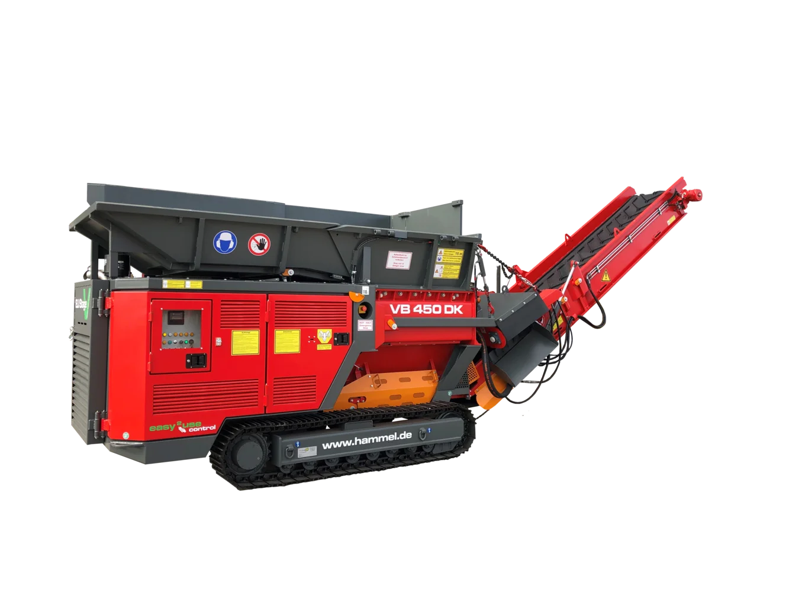
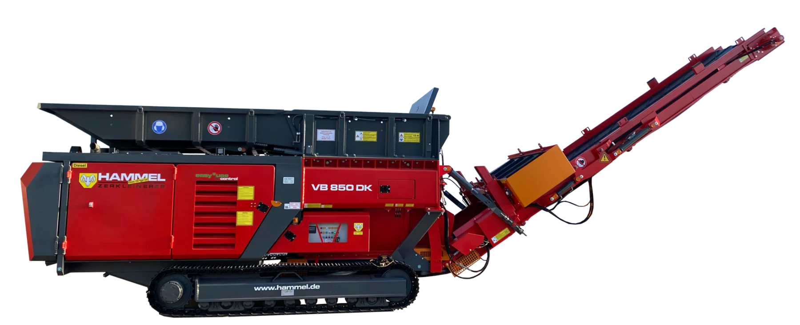

VB 450

Vorbrecher für Holz und Abfall
MEHR ERFAHRENEntdecken Sie unsere leistungsstarke Recyclingtechnik und finden Sie die passende Maschine für Ihre Anforderungen.
MEHR ENTDECKEN
Vorbrecher für Holz und Abfall
MEHR ERFAHRENVielseitiger Vorbrecher für Holz, Müll und weitere Materialien
MEHR ERFAHREN
Leistungsstarker Vorbrecher mit mobilen und elektrischen Varianten
MEHR ERFAHREN
Robuste Zerkleinerung für Holz, Müll und Metall
MEHR ERFAHREN
760 PS in der DK-Ausführung für anspruchsvolle Anwendungen
MEHR ERFAHRENDer große mobile Vorbrecher
MEHR ERFAHRENNachzerkleinerung für definierte Endkörnungen
MEHR ERFAHRENTechnik für Trennung, Siebung und sortenreine Wertstoffe
MEHR ERFAHREN